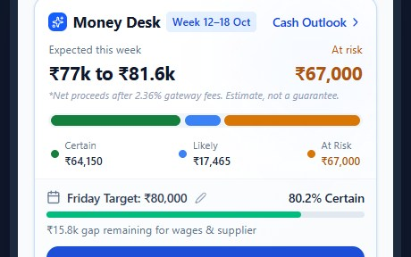
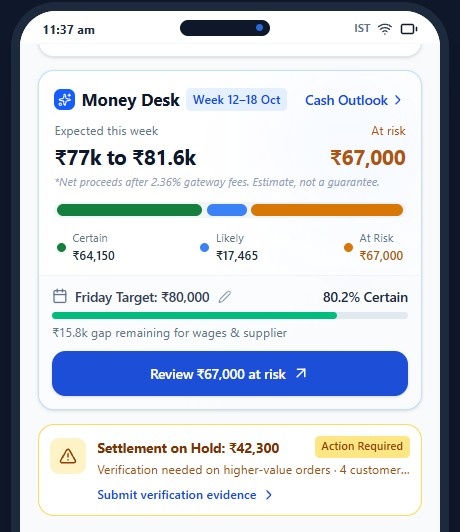

Money Desk
Razorpay · Razorpay ecosystem · Product concept
Turning payment uncertainty into actionable cash-flow decisions for small merchants.

- Product
- Money Desk, a mobile-first merchant cash-flow and payment-resolution concept for the Razorpay ecosystem
- My role
- Product discovery, strategy, UX journey design, and AI-assisted prototyping
- Team
- Individual-led project with AI tools supporting research synthesis and implementation. No separate human team size established.
Product preview

Context
Product: Money Desk, a mobile-first merchant cash-flow and payment-resolution concept for the Razorpay ecosystem.
Role: Product discovery, strategy, UX journey design, and AI-assisted prototyping.
Team: Individual-led project with AI tools supporting research synthesis and implementation. No separate human team size established.
Problem
Small merchants receive payments in staggered amounts but face fixed expenses such as wages and supplier advances. Existing payment workflows show transaction statuses but do not bring together expected cash, overdue collections, in-doubt payments, and held settlements into a clear set of next actions. This creates uncertainty about usable cash, time spent chasing buyers, and delays in resolving payment issues.
My process
Research
Conducted primary research through merchant conversations to understand payment-related pain points and existing workarounds.
Discovery
Synthesized findings into three core uncertainties: money that is late, money whose status is unclear, and money that is held.
Prioritization
Focused on the immediate cash-flow and payment-resolution workflow rather than building a full merchant-management suite.
Trade-offs
Prioritized actionable guidance over false certainty, merchant control over autonomous automation, and trust safeguards over feature breadth. Used AI to synthesize insights and translate approved user journeys into buildable implementation prompts.
Decisions
Cash outlook
Show Certain, Likely, and At Risk amounts rather than a single promised forecast.
Seller-controlled collections
Enable WhatsApp nudges from the merchant’s own account, with frequency limits and no autonomous buyer messaging.
Duplicate-payment prevention
Block repeat payment requests while a transaction remains in doubt.
Held-settlement guidance
Show an appropriate reason category, evidence checklist, status tracking, and escalation path while keeping release decisions human-led.
AI boundaries
Use AI to assist with failure classification, message drafting, and evidence checks, but not to make hold-release decisions or move funds.
Rejected direction
- AI repeatedly favored a COD-to-payment-link conversion feature. I rejected it as the central proposition because it risked making Money Desk a payment-feature consolidation layer rather than differentiating it around cash visibility and resolution of payment uncertainty.
Outcome
- Deliverable: An interactive prototype demonstrating the core Identify → Diagnose → Act → Confirm workflow.
- Product impact: Established a focused product proposition connecting cash visibility to specific actions for overdue, in-doubt, and held payments.
- Measurement plan: Proposed a North Star metric of the percentage of eligible at-risk rupees resolved within seven days, supported by payment conversion, duplicate-payment incidents, hold-resolution time, and outlook usability.
Learning
The project reinforced that a stronger fintech product is not simply a collection of features. It must help merchants make decisions while preserving trust, avoiding unsupported promises, and keeping consequential financial decisions under appropriate human control.